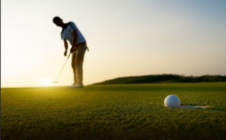
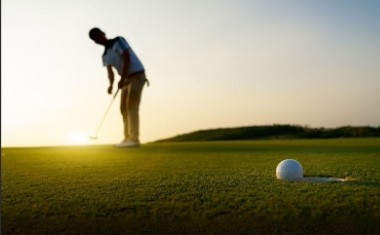

رياضة الجولف
ما هي رياضة الجولف؟
الجولف هي رياضة يتم لعبها في الهواء الطلق، حيث يحاول اللاعب إدخال الكرة في الحفرة بأقل عدد من الضربات.
تُعتبر من أقدم وأرقى الرياضات في العالم، وتحتاج إلى مهارة وتركيز عالٍ.

الجولف هي رياضة يتم لعبها في الهواء الطلق، حيث يحاول اللاعب إدخال الكرة في الحفرة بأقل عدد من الضربات.
تُعتبر من أقدم وأرقى الرياضات في العالم، وتحتاج إلى مهارة وتركيز عالٍ.
